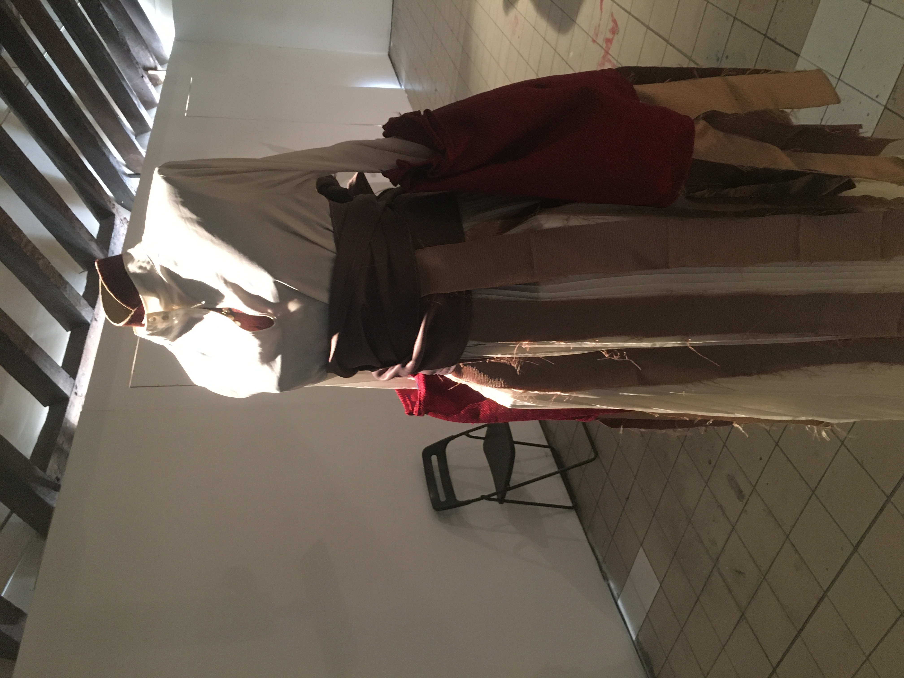
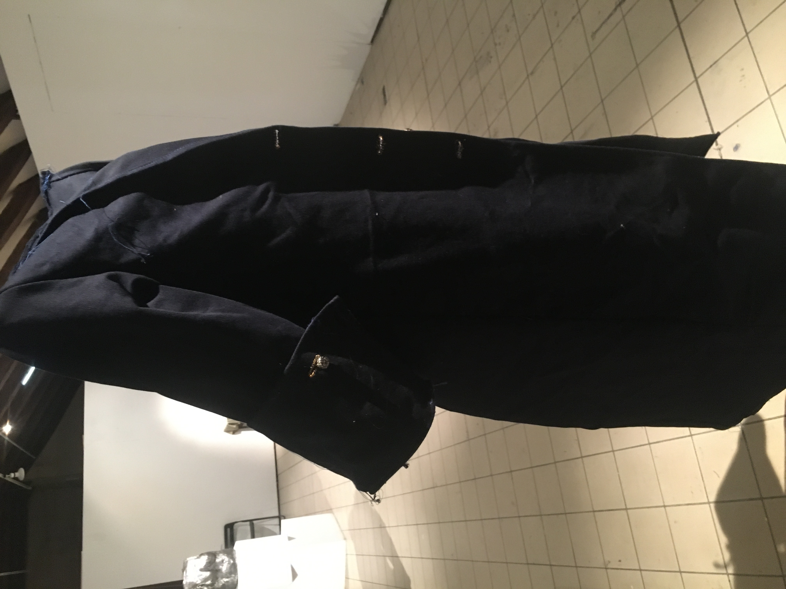
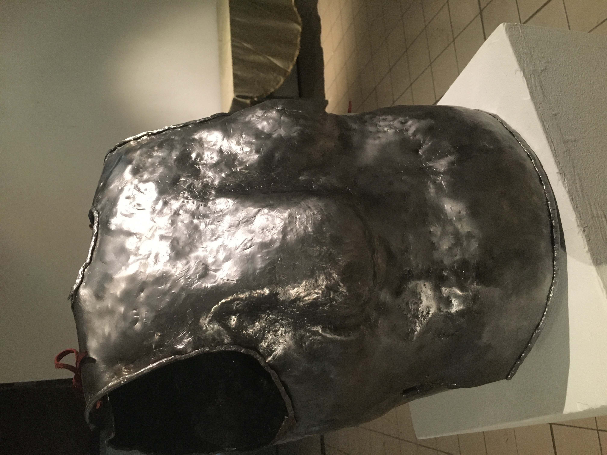
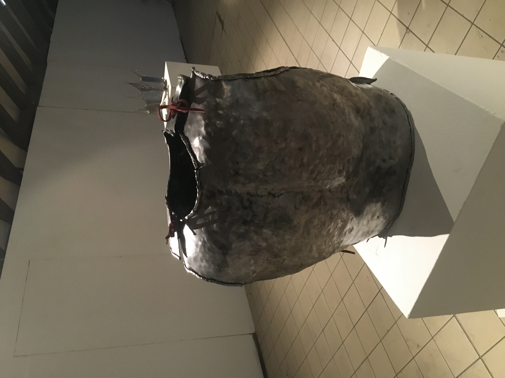
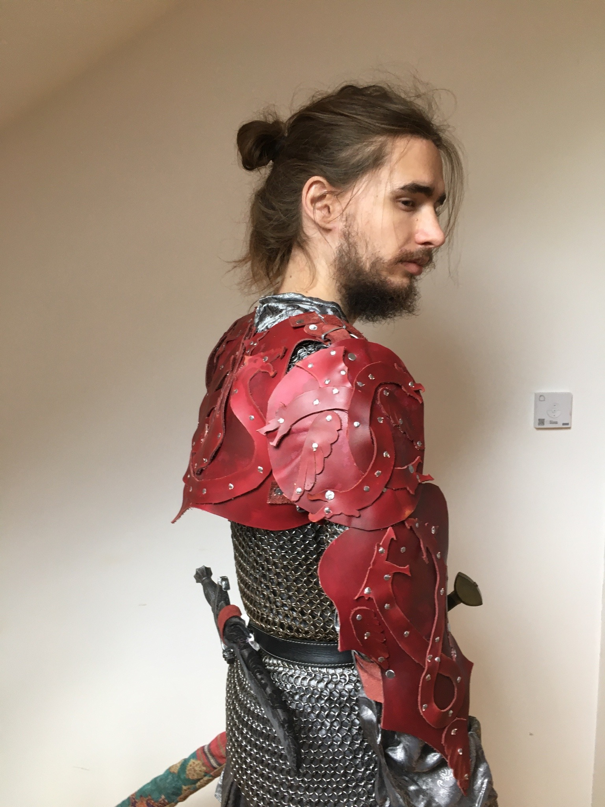
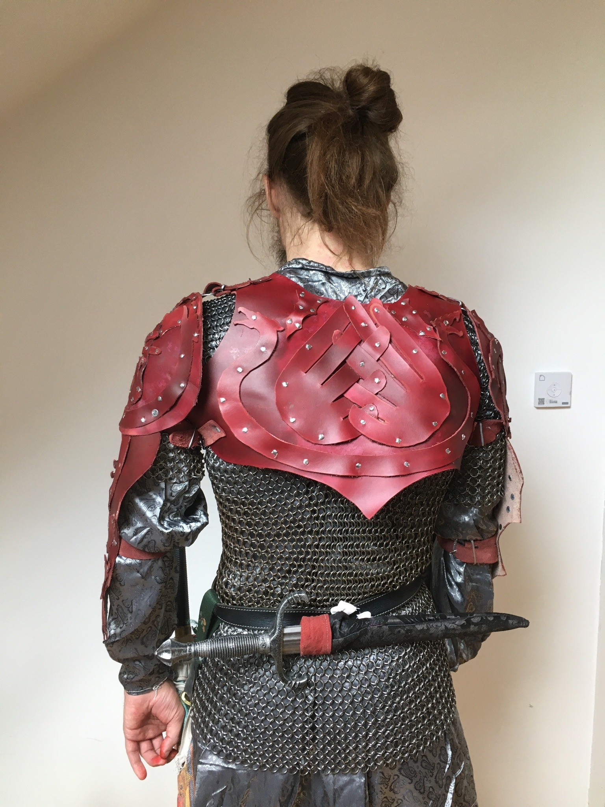
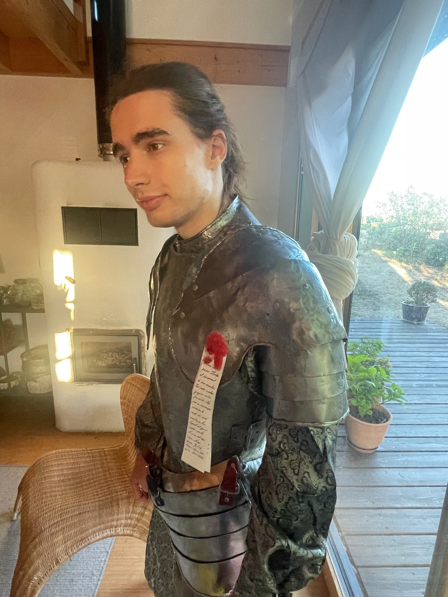
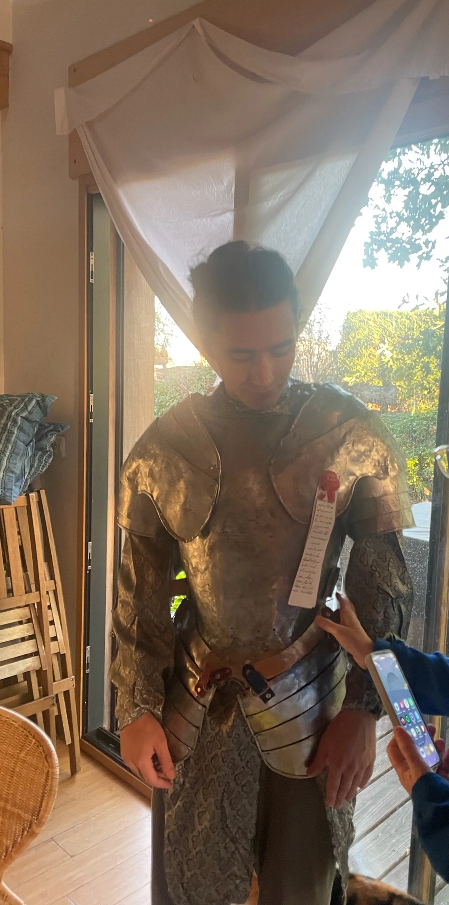
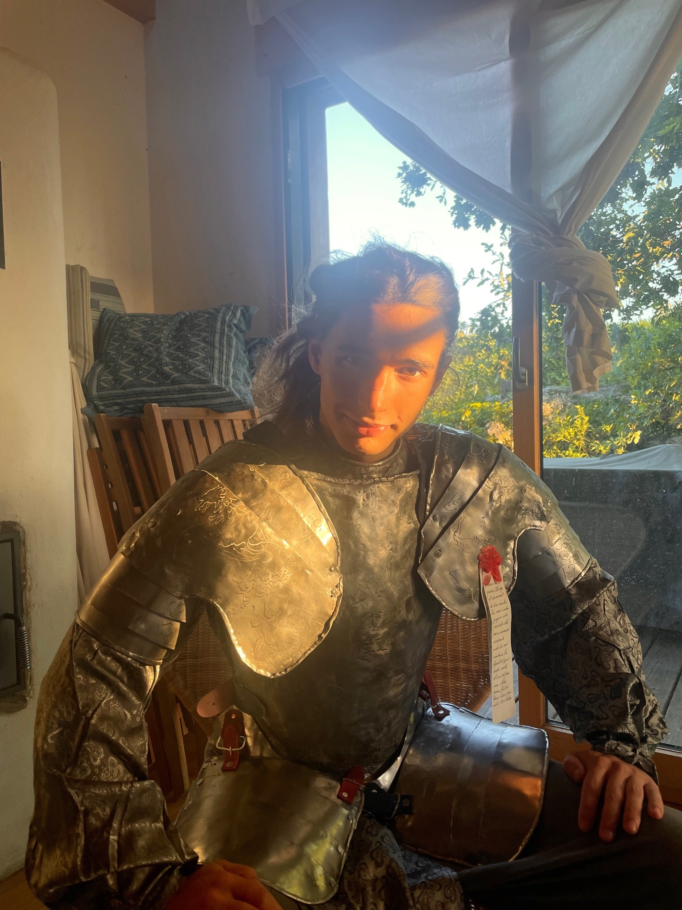

Neven
Voici les différents projets personnels, commandes réalisés pour des clients et des costumes que j’ai confectionnés pour la pièce de théâtre "Toujours Un rayon de Soleil" écrit par Lucy Bouredloie.








